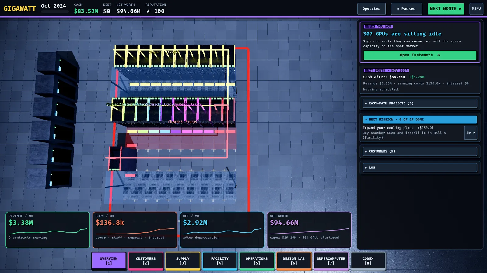

Getting started
Installing GIGAWATT, picking a mode, and finding your way around the HUD, drawers, camera and saves.

Install and run
Grab the archive for your OS from the game's Releases page, extract it, and run the launcher inside — Node.js is bundled, so there is nothing else to install.
| OS | Run |
|---|---|
| Windows | GIGAWATT\GIGAWATT.exe (SmartScreen: More info → Run anyway) |
| Linux | GIGAWATT/gigawatt.sh (needs a Vulkan-capable GPU and driver) |
| macOS | Remove the quarantine attribute from the app, then open it |
Builds are unsigned, so expect a warning from your OS the first time. From source, you need Godot 4.x and Node 18+, and you launch with godot --path godot.
The title screen and modes
You pick one of three modes when starting a campaign, and you can cycle between them any time from the top bar:
- Learner — "I don't know what a chiller is." Explainers everywhere, the most starting cash, and no bankruptcy risk: Learner runs cannot go bankrupt.
- Operator — "I know the basics." A guided procurement planner, checklists and a moderate bankroll. The recommended first mode.
- Tycoon — "Just give me the keys." The least starting cash and no hand-holding.
The Easy Path on the Customers screen, which orders, installs, deploys and assigns contracts for you, is available in every mode.
A short guided tutorial walks a first run from the first customer to the first revenue, then hands over to the Learning path missions (see Your first hour). If a recent save exists, CONTINUE resumes exactly where you left off, tutorial included.
The HUD
The top bar is always visible:
- Date and month progress — the campaign runs Dec 2020 → Dec 2028, one month at a time.
- CASH, DEBT, NET WORTH, REPUTATION (★) — your four vital signs. Reputation rises when you deliver contracts and falls with SLA misses and incidents.
- Speed controls — pause, 1×, 2×, 3× auto-advance, and the big NEXT MONTH button. Nothing happens until you advance a month; this is a turn-based game with a 3D view.
- Mode, How to play, Sound, Save, MENU — self-explanatory; Save writes to the slot you last saved to or loaded from.
Toasts appear top-right for deliveries, incidents and mission completions, and a keynote overlay pauses the clock when a hardware launch lands (see Hardware roadmap).
The eight drawers
Press the number key or click the dock. Pressing the key of the open drawer again closes it and returns you to the Overview.
| Key | Drawer | What's inside |
|---|---|---|
| 1 | Overview (Datacenter) | The 3D hall, the money line in the top bar, a next-month preview, Learning-path missions, Easy-path projects, customers and the event log |
| 2 | Customers | Market offers with live fit verdicts, contracts, assignment |
| 3 | Supply | Procure (guided planner, parts bin, roadmap) and Warehouse (assembly, deploy, spares, ledger) |
| 4 | Facility | Build (power, cooling, floor space, internet, halls) and Energy (PPAs, spot market) |
| 5 | Operations | Team, debt, hardware lifecycle, operating policy, vendors, rivals |
| 6 | Design Lab | Full-screen tray bench and rack bench with live validation |
| 7 | Supercomputer | Full-screen cluster builder: racks + fabric = one machine |
| 8 | Codex | Full-screen parts encyclopedia, "Datacenter 101" concepts, accelerator timeline (0 also opens it) |
Camera and the hall
The game opens in top view with every rack labelled by hardware and customer. Left-drag or WASD pans, right-drag orbits, wheel zooms, Q/E rotates, V returns to top view, L toggles rack labels, and T switches to the thermal view that shows heat. Click a rack to inspect it: serial, status, what it is doing, a spot-market toggle and a decommission button. A gamepad works too (A select, B back, X inspect, Y next month, LB/RB drawers).
Keyboard shortcuts
Space— next month1–8— open/close drawers ·0— open the CodexQ/E— rotate the hall ·WASD— pan ·V/L/T— top view / labels / thermal viewEsc— pause menu ·F1— settings and controls ·Ctrl+Q— quit
Saves
Saves are versioned and stored in your user data folder: three manual slots plus a monthly autosave. Quitting (or closing the window) always writes the autosave first, so it never overwrites a manual slot. Save from the top bar or the pause menu; load from the title screen or the pause menu.
Settings
F1 opens settings in five tabs: display (window mode, V-Sync, frame-rate limit, UI size), graphics (a preset from Potato to Ultra and a 3D resolution slider), audio (volume and a music-style picker; the soundtrack follows the game, so expect something darker when things fail), accessibility (colour-blind-safe cluster palette, reduced motion, text size) and controls. See Performance and settings.
Next: Your first hour.
Found a mistake or something missing? Edit this page on GitHub or ask in Discussions.